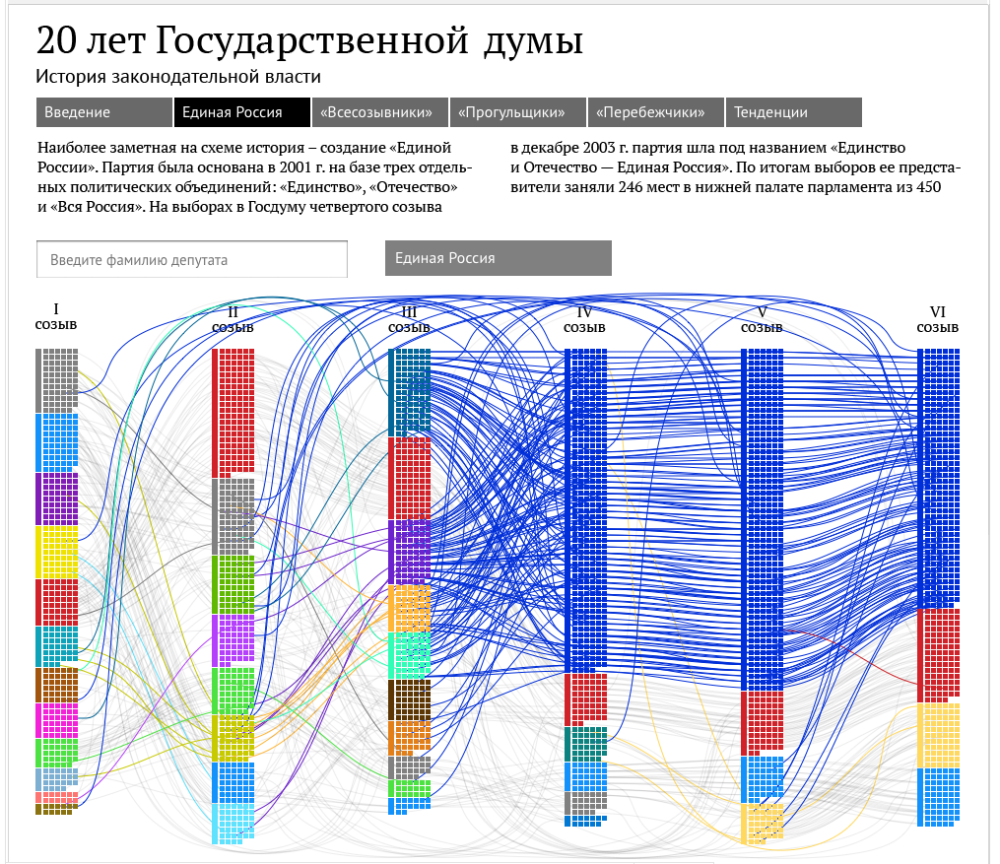

Projects I worked on at Ria Novosti (2013-2015)
Posted on Sat 02 May 2020 in projects
I've been working at Ria Novosty's Inforgraphics team as a data journalist/editor from 2012 to 2015. That was a pivotal moment for me as I "officially" left architectural career towards more data-related. It was a great experience for many reasons, including quick turn-around project management, collaboration with developers and designers, quite creative data analytics, time and opportunity to read a lot, learn a lot, and meet with many interesting people.
Despite being a (one of two) official Russian news agencies, our team was quite liberal both as a collective, and also in terms of work we've done. This wasn't exactly a coincidence - on one side, it is really hard to read and write news, and not to make your own opinions. But it also was a deliberate policy of the agency, as we played along with the "liberal" wing of the government (and yes, also expand our audience). Our work was, in part, a reason for the whole agency to be dismantled in 2015; Our team was "sold" to Rambler Media Group. Despite all, I think that we've done a lot, and I am very proud of our job.
Where did they go? How Russian Deputies changed their political alignment

Project dedicated to 20th anniversary of Russian Duma (Parliament), tracing back the political alignment of deputies and all Political Parties ever present in there.
Team:
code: Michail Dunayev design: Valeriy Borisov editor, analyst: Philipp Kats director: Maya Stravinskaya
Clustering Russian Deputies
Clustering Russian Deputies is a project done in 2013 at Ria Novosti Studio of Infographics. Project explores how actual votes of Russian deputies are revealing underlying political structures and fractions, and how that behavior changes based on the topics of the laws. It also highlights how specific deputies voted on key issues, such as Prohibition of international adoption of Russian children, and some others.
Unfortunately, project itself is removed from the site now, but here is a review (and archived screenshot) - description
Team:
code: Evgeny Panov design: Alexey Novichkov, Valeriy Borisov editor, analyst: Philipp Kats director: Maya Stravinskaya
Deputies Tax Declarations "Calculator"

A visual representation of Deputies' tax declaration and distribution - who owns what and how much of it. Data was collected, parsed and cleaned. Car prices were estimated using external databases
Russian Government Budget "Calculator"

Visual representation of the state budget, and a "minigame" / survey on your personal preferences. For each custom budget, a country with similar budget strategy is shown.
Pension Reform Calculator (How they got you)

A visual representation of a new "Formula" for official pension (social security payments). Shows how it results in the same amount "on paper", allowing government to pay less over time.
Singapore Urban Forum

- (Information is beautiful Award) link)
4 Posters, telling the story or Moscow's urban development
Design: Nadezhda Andrianova, Maria Miahaylova Data, Content: Philipp Kats